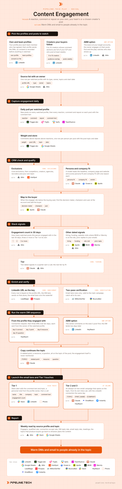

Content Engagement
Install the Pipeline.tech "Content Engagement" outbound play. Fetch https://raw.githubusercontent.com/pipeline-tech/plays/main/core/SKILL.md and https://raw.githubusercontent.com/pipeline-tech/plays/main/plays/content-engagement/SKILL.md, save them as ~/.claude/skills/pipeline-outbound-core/SKILL.md and ~/.claude/skills/pipeline-content-engagement/SKILL.md, then run /pipeline-content-engagement.

Everyone who reacts to or comments on a post in your topic just told you they are in the topic, and the ones who did it on your own or your team's posts already know your name. So the first touch is a warm DM from the profile they engaged with, continuing the conversation the post started, never a cold email and never a thank-you for the like. The post opened the conversation; this play carries it on.
Load pipeline-outbound-core first. Where a step says "apply core", follow that section of the core skill.
Inputs
Ask for these before step 1 and save them to ./pipeline-plays.config.json:
- The ICP in one paragraph: industries, headcount band, geography, the problem you solve, who owns it.
- The seat that buys: exact titles and functions, with the seniority floor.
- The source list: your profile, the team members who have agreed, 5 to 10 creators your buyers follow, and the target accounts if the ABM option is on.
- Stack answers from core section 1, plus the capture tool and whether the website runs RB2B or Warmly.
- The three to five topics you post on, in the words buyers use on calls.
Steps
1Pick the profiles and posts to watch
- List your own profile and every team member's profile. Each team member says yes in writing first, because their profile sends the DMs in step 6.
- Choose 5 to 10 creators your buyers follow. Count ICP titles in the comments of three recent posts before adding anyone.
- ABM option: add the execs at your target accounts. The owner engages first; the play catches who else does.
- Store the list with an owner per profile; the owner signs every DM from that source.
2Capture engagement daily
- A daily job finds new posts on every watched profile and pulls each reaction, comment and repost with the comment text. Trigger.dev is the orchestration we run; Trigify, Apify or Teamfluence are capture options when the user already has one.
- Weight it: comment above repost above reaction. Store weight, post URL, topic and date, one row per person per post.
- Keep the comment text. A question or a disagreement is the best opening line you will get.
3CRM check and qualify
- Apply core: exclusions. Also remove competitors, creators, agencies, recruiters and your own team; they engage on every post and none of them buy.
- A model scores persona and company fit from the headline, website and headcount, with a one-line reason each. Below the floor, the row is kept for reporting only.
- When the engager sits below the buying seat, map the account to its decision maker, champion and user and add the buyer. The engager stays on the record as the way in.
4Stack signals
- Count engagements per person across all watched profiles in 30 days. Three or more is Tier 1 on its own.
- Add the other dated signals: open roles in the function you sell to, a round in the last 90 days, a site visit where RB2B or Warmly is installed, any prior reply.
- Apply core: tiering. Two dated signals in a quarter earn a call; engagement counts as one.
5Enrich and verify
- The LinkedIn URL is the key on every row. The DM lane needs nothing else.
- For the email lane, apply core: enrichment and core: verification. A qualified engager with no email still gets the DM lane.
6Run the warm DM sequence
- Load each person into a HeyReach campaign sent from the profile they engaged with: a connection request, then three touches over ten days (a related point, a resource, a question), all on the topic of the post.
- Every message continues the topic as a peer would. Never mention the like, comment or repost. Creators' engagers never hear the creator's name.
- ABM option: the owner comments on the exec's post first, by hand; the connection request goes out two days later.
- Stop on a reply, a booked call or an open deal.
7Launch the email lane and Tier 1 touches
- Tier 1: a Slack alert with the person, topic, comment text and engagement count. The profile owner sends a personal note, then calls within three days.
- Tier 2 and 3: an always-on two-email campaign per topic from its own inbox set, with the LinkedIn connection the same day as email 1.
- Apply core: copy and send rules. Email 1 names the topic in the first sentence with one direct ask; email 2 is a threaded nudge. Show drafts before upload.
- Write every contacted person to the CRM with play, source profile, topic, tier and date.
8Report
- Weekly, by source profile and topic: engagers, qualified rate, connection accept rate, DM reply rate, email reply rate, meetings.
- Send the topics that produce buyers back to whoever plans the content. Buyers in the funnel earn a topic more posts; peers and vendors earn it fewer.
- Apply core: credits and handoff.
Guardrails
- The first touch comes from the profile they engaged with, never from a cold inbox set. The email lane follows, from inboxes that belong to this play.
- Never reference the like, the comment or the repost. They should feel they met you in the thread, not that they were logged.
- A team member's profile is watched and sends DMs only with their written consent, which they can withdraw at any time.
- Never name the creator. Their engagers hear about the topic, not whose post it was.
- One person is contacted at most once per 60 days across all social plays; check the CRM before loading anyone.
- Scope: this play covers engagers on your own, your team's and your chosen creators' posts, plus the ABM option on execs at target accounts. Engagers on competitor voices' posts belong to Competitor Post Engagers; third-party posts about your brand, competitors or category pain belong to Brand and Keyword Mentions.
Example run
User: "/pipeline-content-engagement for our outbound agency, B2B SaaS 50 to 500 people in the US, seats VP Sales, CRO, VP Marketing and Head of RevOps, three team profiles and eight creators"
- Consent from three team members; eight creators checked, seven kept. 10 watched profiles with owners, 4 topics.
- Trigger.dev pulled 61 posts in month one: 4,870 engagements from 3,240 people; 712 comments, 418 reposts, 3,740 reactions.
- 2,980 after core exclusions, 410 more removed as competitors, creators, agencies, recruiters and team. 1,140 at ICP-fit companies, 620 in the seat, 190 below it mapped to 170 buyers.
- 86 people engaged three or more times in 30 days. Stacked with 44 hiring signals, 12 rounds and 31 RB2B site visits: 118 Tier 1, 390 Tier 2, 282 Tier 3.
- 790 rows keyed on LinkedIn URL for the DM lane; 561 emails found, 498 verified valid, 29 catch-all in their own campaign.
- 790 loaded into HeyReach across three owner profiles; 61% connection accept, 14% DM reply rate by week three.
- 118 Tier 1 Slack alerts, 71 personal notes, 38 calls completed. 672 Tier 2 and 3 into four topic campaigns; 7.1% email reply rate.
- 26 meetings in month one; the outbound infrastructure topic produced 14 and earned two more posts a week.